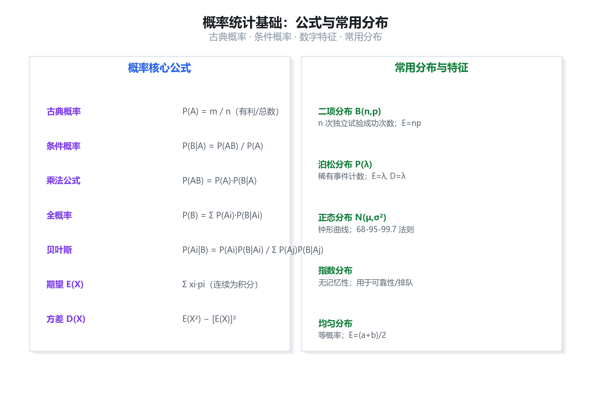
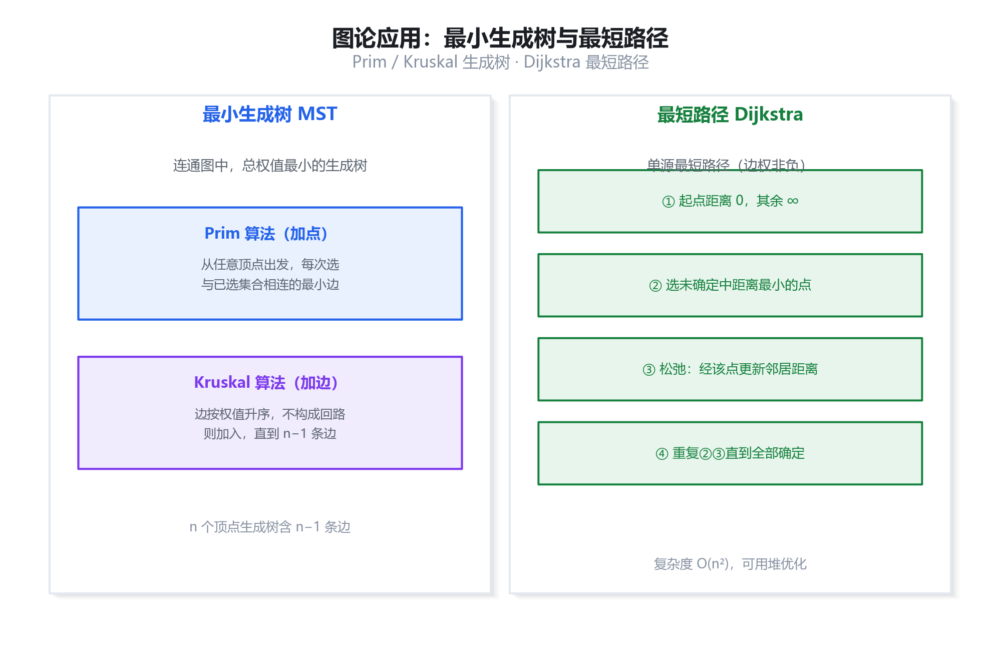
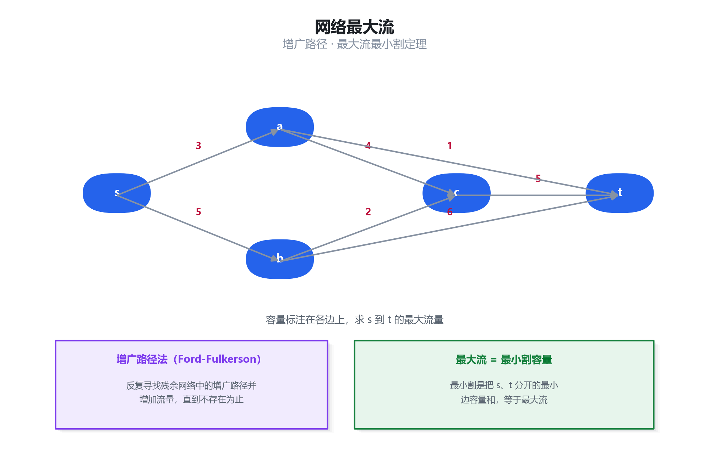
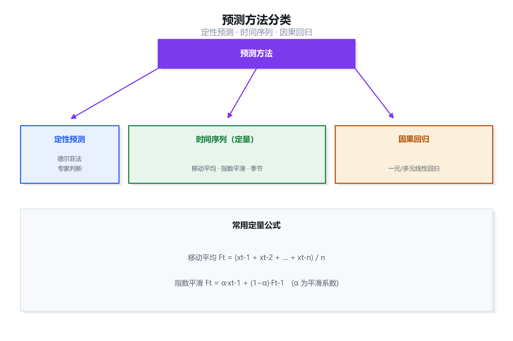
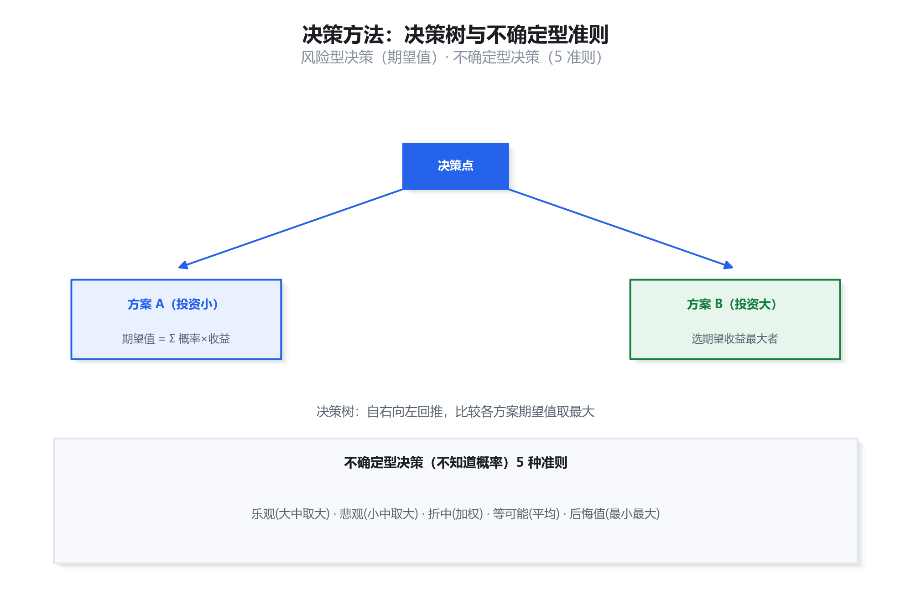
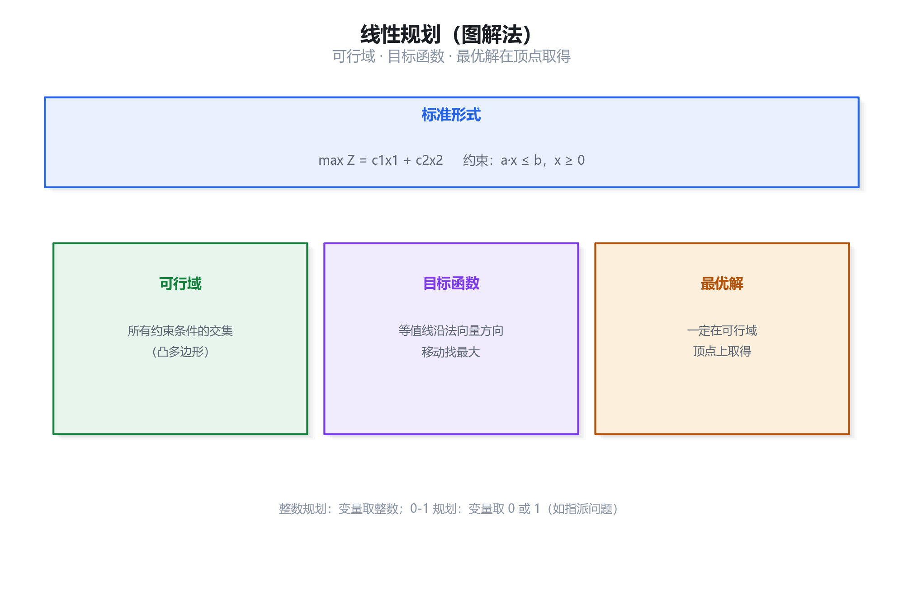
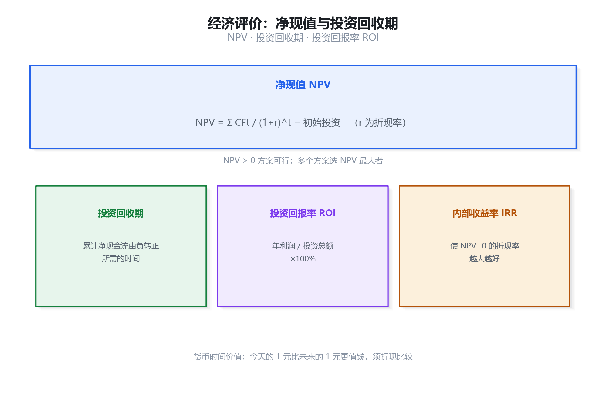
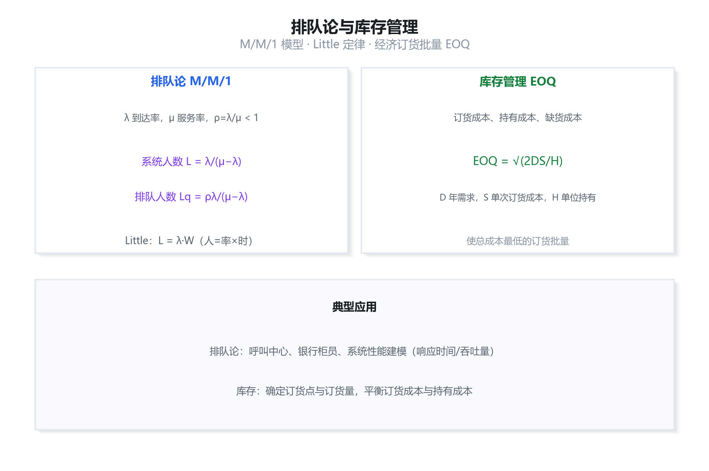

数学与经济管理：考点精讲 + 真题详解
本章对应官方教程第 2 章，是上午「综合知识」中计算题的主要来源，约占 4—6 分。概率统计基础、图论（最小生成树、最短路径、最大流）、预测与决策方法、线性规划、净现值与投资回收期、排队论与库存管理是高频考点。本资料逐条讲透概念、给出真实原理插图（可放大细看）、并按「先讲道理、再列对照、最后逐步推导」的方式拆解真题。
概率统计基础
高频1.1 概率的基本概念
概率是度量随机事件发生可能性大小的数，取值在 0 到 1 之间。事件 A 的概率记作 P(A)。核心定义：
1.2 条件概率与三大公式
乘法公式： P(AB) = P(A)·P(B|A)
全概率： P(B) = Σ P(Ai)·P(B|Ai) （Ai 为完备事件组）
贝叶斯： P(Ai|B) = P(Ai)·P(B|Ai) / Σ P(Aj)·P(B|Aj)
1.3 随机变量的数字特征
方差： D(X) = E(X²) − [E(X)]² （衡量离散程度）
1.4 常用分布
| 分布 | 适用场景 | 参数与期望 |
|---|---|---|
| 二项分布 B(n,p) | n 次独立试验的成功次数 | E=np，D=np(1−p) |
| 泊松分布 P(λ) | 单位时间稀有事件计数 | E=λ，D=λ |
| 正态分布 N(μ,σ²) | 大量独立因素叠加 | E=μ，D=σ²，68-95-99.7 法则 |
| 指数分布 | 可靠性寿命、排队间隔 | 无记忆性，E=1/λ |
| 均匀分布 U(a,b) | 区间内等可能 | E=(a+b)/2 |

图论应用
高频2.1 最小生成树 MST
最小生成树：在带权连通图中，选取若干条边使所有顶点连通，且边的总权值最小。n 个顶点的生成树恰有 n−1 条边。
| 算法 | 思想 | 过程 |
|---|---|---|
| Prim（加点） | 从点集出发 | 任选起点，每次把与已选点集相连的最小权边及其顶点加入 |
| Kruskal（加边） | 从边集出发 | 边按权值升序排列，不构成回路就加入，直到 n−1 条 |
2.2 最短路径 Dijkstra
Dijkstra 算法求单源点到其余各顶点的最短路径（要求边权非负）：
- 起点距离设为 0，其余顶点距离设为 ∞；
- 从未确定顶点中选距离最小的顶点，标记为已确定；
- 松弛：用该顶点更新其邻居的距离（若经它更近则更新）；
- 重复 2、3 直到所有顶点确定。

网络最大流
常考3.1 基本概念
网络流：在带容量网络（有源点 s 与汇点 t）中，从 s 流向 t 的流量。每条边有容量（最大可流经量），流量不能超过容量，且除 s、t 外的中间节点须满足「流入量 = 流出量」（流量守恒）。
3.2 最大流与增广路径
求最大流常用 Ford-Fulkerson 方法：反复在残余网络中寻找一条从 s 到 t 的增广路径，沿该路径增加流量，直到不存在增广路径为止。
3.3 最大流最小割定理

预测方法
常考4.1 预测方法分类
| 大类 | 方法 | 特点 |
|---|---|---|
| 定性预测 | 德尔菲法、专家判断、头脑风暴 | 依赖经验，适用于缺乏历史数据 |
| 时间序列 | 移动平均、指数平滑、季节分解 | 只利用自身历史数据 |
| 因果分析 | 一元/多元线性回归 | 找自变量与因变量的关系 |
4.2 常用定量公式
指数平滑： Ft = α·xt−1 + (1−α)·Ft−1 （α 为平滑系数，0<α<1）

决策方法
高频5.1 风险型决策（已知概率）
风险型决策指各自然状态的概率已知，常用期望值法或决策树。期望值 = Σ（概率 × 结果值），选择期望收益最大（或期望损失最小）的方案。
5.2 不确定型决策（概率未知）
当各自然状态概率未知时，可用五种准则：
| 准则 | 做法 | 心态 |
|---|---|---|
| 乐观准则 | 大中取大（各方案最好结果中取最大） | 激进 |
| 悲观准则 | 小中取大（各方案最坏结果中取最大） | 保守 |
| 折中准则 | 加权：α×最好 + (1−α)×最坏 | 折中 |
| 等可能准则 | 各状态等概率求平均 | 中立 |
| 后悔值准则 | 最小最大后悔值（机会损失） | 稳健 |

线性规划
常考6.1 标准形式
线性规划是在一组线性约束下，求线性目标函数的最优值：
约束： a₁₁x₁ + a₁₂x₂ + … ≤ b₁ （线性等式/不等式）
非负： x₁, x₂, …, xₙ ≥ 0
6.2 图解法与关键结论
- 在坐标平面画出所有约束对应的直线，确定可行域（各约束交集，通常为凸多边形）；
- 作目标函数的等值线，沿其法向量方向平移；
- 最优解在可行域的顶点上取得。

经济评价与投资分析
高频7.1 货币时间价值
资金具有时间价值：今天的一元钱比未来的一元钱更值钱。因此不同时点的现金流不能直接相加，必须先折现到同一时点。
7.2 净现值 NPV
说明： CFt 为第 t 期净现金流，r 为折现率，C₀ 为初始投资
7.3 投资回收期与回报率
| 指标 | 含义 | 判据 |
|---|---|---|
| 投资回收期 | 累计净现金流由负转正所需时间 | 越短越好 |
| 投资回报率 ROI | 年利润 / 投资总额 ×100% | 越高越好 |
| 内部收益率 IRR | 使 NPV=0 的折现率 | 大于基准折现率可行 |

排队论与库存管理
常考8.1 排队论 M/M/1 模型
排队论研究服务系统中顾客排队等待的规律。M/M/1 表示：到达间隔服从指数分布（M）、服务时间服从指数分布（M）、单个服务台（1）。
系统内平均人数： L = λ / (μ − λ)
平均排队人数： Lq = ρ·λ / (μ − λ)
Little 定律： L = λ · W （人数 = 到达率 × 平均逗留时间）
8.2 库存管理 EOQ
经济订货批量（EOQ）是使订货成本与持有成本之和最小的订货批量：
说明： D 年需求量，S 每次订货成本，H 单位年持有成本

数学建模与工程伦理
了解9.1 数学建模
数学建模是把现实问题抽象为数学模型、求解并验证的过程。基本步骤：模型准备 → 模型假设 → 模型建立 → 模型求解 → 模型分析 → 模型检验与应用。建模的关键是抓主要因素、合理简化。
9.2 工程伦理
系统分析师作为工程技术人员，应遵循工程伦理：以公众安全、健康与福祉为首要职责，诚实守信、保护隐私、避免利益冲突、对自己的工作负责。
复习建议
应试10.1 必背公式清单
| 类别 | 公式 |
|---|---|
| 条件概率 | P(B|A) = P(AB) / P(A) |
| 贝叶斯 | P(Ai|B) = P(Ai)P(B|Ai) / Σ P(Aj)P(B|Aj) |
| 期望 / 方差 | E(X)=Σxᵢpᵢ；D(X)=E(X²)−[E(X)]² |
| 移动平均 | Ft = (xt−1+…+xt−n)/n |
| 指数平滑 | Ft = α·xt−1 + (1−α)·Ft−1 |
| 净现值 | NPV = Σ CFt/(1+r)^t − C₀ |
| Little 定律 | L = λ·W |
| 经济订货批量 | EOQ = √(2DS/H) |
10.2 五道真题演练
A. 28% B. 50% C. 72% D. 95%
查看解析
答案：A
这是贝叶斯问题。设 A=故障，B=报警。已知 P(A)=2%=0.02，P(B|A)=0.95，P(B|非A)=0.05。
P(B) = 0.02×0.95 + 0.98×0.05 = 0.019 + 0.049 = 0.068
P(A|B) = 0.02×0.95 / 0.068 = 0.019 / 0.068 ≈ 0.279 ≈ 28%。
关键：尽管报警器看似很准，但故障的先验概率极低（2%），导致误报（98%正常机器中 5% 误报）远多于真报。故选 A。
A. 4 B. 5 C. 6 D. 7
查看解析
答案：B
n 个顶点的生成树（含最小生成树）恰有 n−1 条边。这里 n=6，故边数 = 6−1 = 5 条。
这是生成树的基本性质，与具体边权无关，故选 B。
A. −0.5 B. 0 C. 9.5 D. 20
查看解析
答案：A
NPV = 40/(1.1) + 40/(1.1)² + 40/(1.1)³ − 100
= 40×0.9091 + 40×0.8264 + 40×0.7513 − 100 = 36.36 + 33.06 + 30.05 − 100 = 99.47 − 100 ≈ −0.53 万元。
NPV 略小于 0，项目勉强不可行，故选 A。注意各年现金流必须先折现再加总。
A. 甲，期望 22 万 B. 甲，期望 26 万 C. 乙，期望 22 万 D. 乙，期望 26 万
查看解析
答案：A
方案甲期望 = 0.6×50 + 0.4×(−20) = 30 − 8 = 22 万元。
方案乙期望 = 0.8×30 + 0.2×(−10) = 24 − 2 = 22 万元。
两方案期望相等，但甲的风险（方差）更大。若仅按期望值法，二者相等；题目选项给出「甲，期望 22 万」，故选 A。实际决策中同等期望下选风险更小的乙。
A. 1.0 B. 1.5 C. 2.5 D. 5.0
查看解析
答案：B
M/M/1 模型：L = λ / (μ − λ) = 3 / (5 − 3) = 3 / 2 = 1.5 人。
检验：利用率 ρ = λ/μ = 3/5 = 0.6 < 1，系统稳定。故选 B。